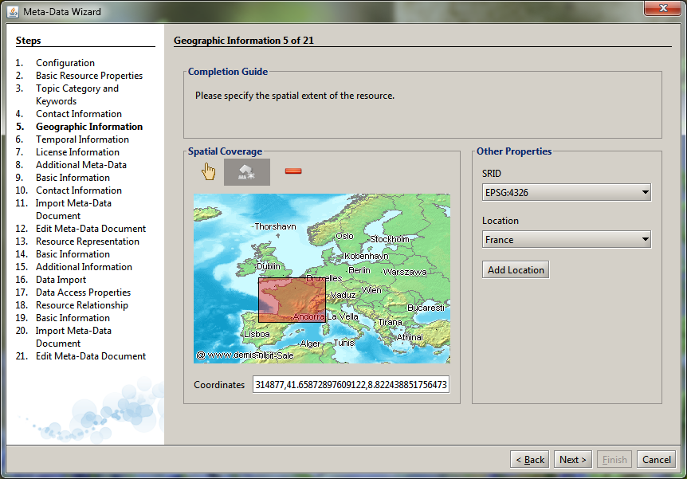

Meta-Data Wizard
SIP Expert Catalogue and Data Management GUI
View the Project on GitHub switchonproject/cids-custom-switchon
About the SIP Expert GUI
This is the Meta-Data Wizard Expert Meta-Data Registration Tool of the Spatial Information Platform (SIP) of the SWITCH-ON EU FP7 collaborative project.

The Meta-Data Wizard is an expert tool for collecting a complete set of meta-data in accordance to the Specification of the Standard Information Model for Meta-Data. It is integral part of the SIP Export GUI and therefore targeted towards Expert Users and SWITCH-ON Consortium members. A more user friendly and public accessible alternative for is the Open Data Registration Tool.
Interactive User Guides and Tutorials
The Meta-Data Wizard Tutorial shows you how to register a new open data resource in the SIP by providing basic meta-data about the resource with help of the Meta-Data Wizard of the SIP Expert GUI. An important prerequisite for the resource registration process is that the actual resource data is accessible online (e.g. available in SWITCH-ON Subversion Repository) and URI to the data is known. For more information on how to upload data, please refer to the SWITCH-ON Subversion Tutorial of the Virtual Water-Science Laboratory.
Meta-Data provides information about data and thus allows the correct discovery, identification and interpretation of data for a given purpose. The main purpose of meta-data in SWITCH-ON is to find, bind, transform and publish open data (Open Data Repurpose Pattern).
In SWITCH-ON, meta-data is defined by the Standard Information Model for Meta-Data. It is based on an ISO 19115 meta-data profile (meta-data standard recommended by the INSPIRE directive) and thus also compatible with external catalogues like GEOSS.
The Basic Meta Data Profile of the Meta-Data Wizard asks only for minimal set of meta-data that makes the data find- and bind-able in the SIP.
To ensure compliance with the ISO standard, the Meta-Data Wizard automatically provides additional default values, unless they are explicitely provided by the user, e.g. in the Advanced or Expert Meta-Data Profiles.
The minimal meta-data sets includes
- Resource name and description
- (CUASHI) keywords
- spatial extent
- access conditions and license information
- resource location (URI)
The following video shows how to register a new Resource in SIP with help of the Basic Meta-Data Profile of the Meta-Data Wizard. For detailed instructions, please refer to the Tutorial Document.

Reporting Problems
Please report any problems or bugs related to the Meta-Data Wizard by using the GitHub Issue Tracker.